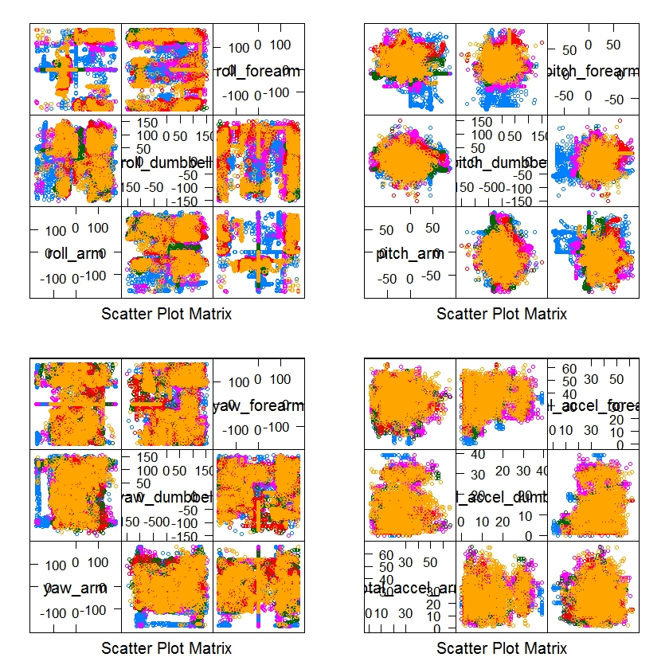
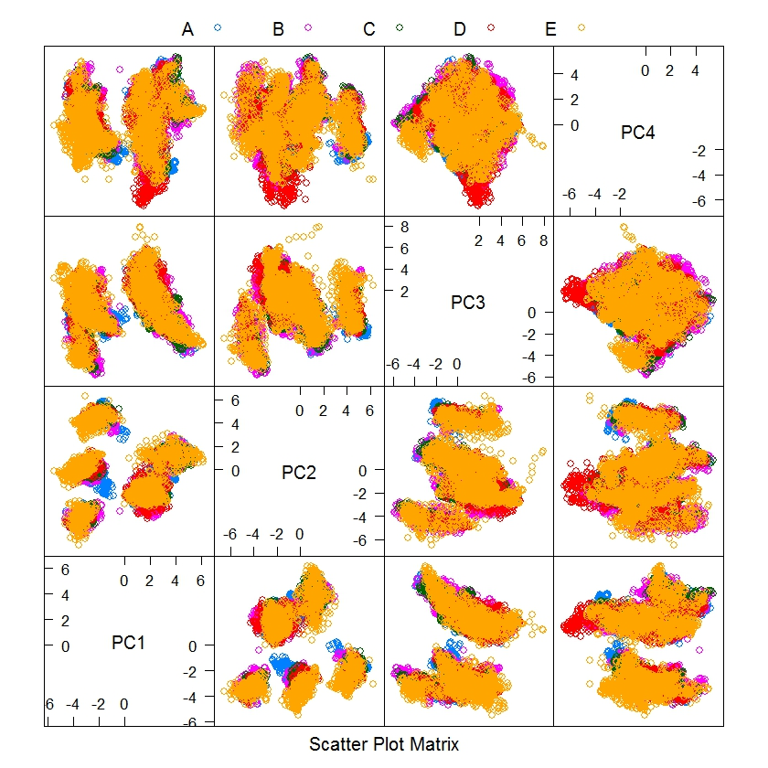
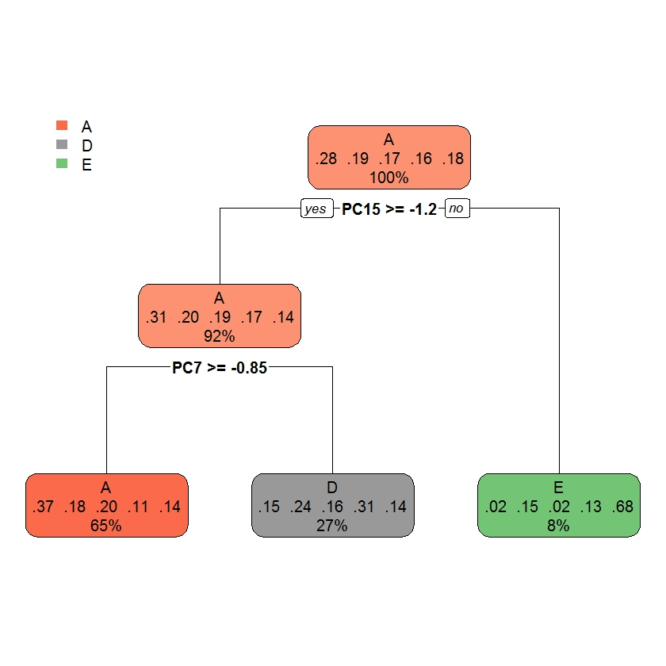
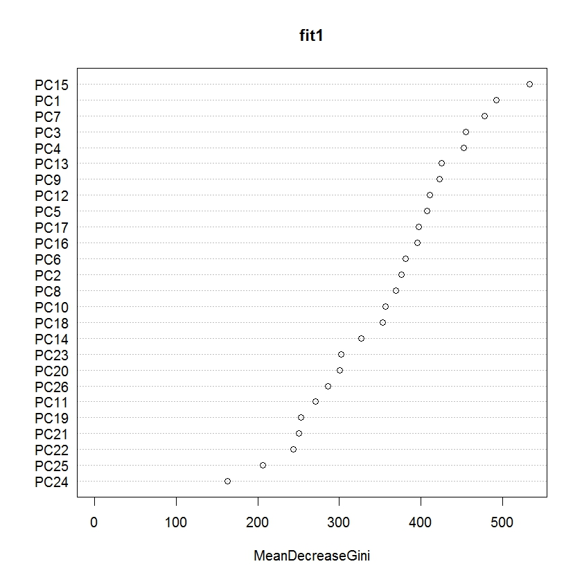

Practical Machine Learning - Final Assigment
Goal of the project
The goal will be to use data from accelerometers on the belt, forearm, arm, and dumbell of 6 participants to predict which exercise has been performed among types "A", "B", "C", "D", "E".
Loading and cleaning of data
First of all, we load the data of the training set and we preliminarly inspect it to check the number of observation (row) and the predictors available (comulmns):
myData = read.csv("pml-training.csv",header = TRUE,na.strings = c("NA","NaN","#DIV/0!"));
summary(myData)
The data frame contains 19622 observation and 160 predictors, but many values are missing. In order to reduce the dimension of the problem, even if many prediction model can still work, we remove the columns where some values are missing.
Since the number of observation is big, we can use cross-validation and divide the training set in two subset, the first one will be used as the actual training set and the second one as the testing set to validate the prediction models.
inTrain <- caret::createDataPartition(y = myData$classe, p = 0.6, list = FALSE)
training <- myData[inTrain, ];
testing <- myData[-inTrain, ];
In this way, the training set contains 11776 observation and the number of predictors has been reduced to 60. By taking a look on the names and contents of the columns we identify the following variables:
names(training)[1:7]
[1] "X" "user_name" "raw_timestamp_part_1"
[4] "raw_timestamp_part_2" "cvtd_timestamp" "new_window"
[7] "num_window"
that can be considered not useful for our prediction model (for instance, timestamp of the exercise doesn't give us information about the way the participant has performed). The last column classe is the variable that has to be predicted with the help of the data contained in the others columns.
To improve our preliminary analysis, we try to group some variables in order to check if it is possible to recognize some pattern in the scatter plot. We do not consider for this analysis the columns containing the decomposition in components "_x", "_y" and "_z" of the variables, and we group the predictors for "yaw", "pitch", "total_accelaration" and "roll" and we study the scatter plot for each pair in those groups. In the picture below, we show the described plot where no evident behaviour can be indentified at a first look.

Preprocessing
We analyse the correlation among the columns containing numeric values. Here below some of the most correlated columns:
total_accel_belt roll_belt 0.9813511
accel_belt_y roll_belt 0.9265300
accel_belt_z roll_belt -0.9920407
...
Since some of those columns are strongly correlated we can reduce the number of predictors by preprocessing using PCA and extracting the components that 'explain' the 95% of the variability.
threshVal <- 0.95;
preProcPCA <- preProcess(training[,1:ncol(training)-1], method = "pca", thresh = threshVal )
After the described preprocessing, we reduced the number of predictors to 32. We plot the first 4 components in order to see if some behaviour can be detected, but as shown in the picture below and similary to the plot shown for the original variables, it is hard to find some clue on how the classes can be distinguished.

Prediction models
We now use the caret and randomForest packages to train three different prediction models:
- Random forest
- Linear discriminant analysis
- Simple Decision Tree Model
library(caret)
library(randomForest)
fit1<-randomForest(training.classe~.,data=trainingPP);
fit2<-train(training.classe~.,data=trainingPP,method="lda");
fit3<-train(training.classe~.,data=trainingPP,method="rpart");
We compute the confusion matrix for the three models and we get the following value for the accuracy: 1 for Random Forest, 0.5255605 for LDA, and 0.3755944 for the simple tree.
Given these results two remarks can be done. The first one concerns the RF model, where the accuracy is 1. This does not means the the model is perfect, probably this is an overfitting effect. We will evaluate on the testing set how much the overfitting has impacted on the performances of the RF model. The second remarks concerns the model based on a simple tree decision. Accuracy is very bad and if we plot the decision tree of the final model (see picture below) we can notice that only three type of class can be predicted: "B" and "C" are not possible output of the prediction model, so for these classes we will have only errors.
From the result so far, the RF model seems the best, but as previously explained, we need to evaluate if it is affected by a strong overfitting.

Analysis
As final step, we test the models on the testing set. We expect to get a similar or smaller accuracy when testing on a set different from the one used to train the model.
The following are the result we get for the confusion matrices obtained:
Random Forest
Confusion Matrix and Statistics
Reference
Prediction A B C D E
A 2210 35 6 3 1
B 11 1462 35 0 5
C 6 18 1310 60 10
D 4 1 16 1221 20
E 1 2 1 2 1406
Overall Statistics
Accuracy : 0.9698
95% CI : (0.9658, 0.9735)
No Information Rate : 0.2845
P-Value [Acc > NIR] : < 2.2e-16
Kappa : 0.9618
Mcnemar's Test P-Value : 1.093e-10
Statistics by Class:
Class: A Class: B Class: C Class: D Class: E
Sensitivity 0.9901 0.9631 0.9576 0.9495 0.9750
Specificity 0.9920 0.9919 0.9855 0.9938 0.9991
Pos Pred Value 0.9800 0.9663 0.9330 0.9675 0.9958
Neg Pred Value 0.9961 0.9912 0.9910 0.9901 0.9944
Prevalence 0.2845 0.1935 0.1744 0.1639 0.1838
Detection Rate 0.2817 0.1863 0.1670 0.1556 0.1792
Detection Prevalence 0.2874 0.1928 0.1789 0.1608 0.1800
Balanced Accuracy 0.9911 0.9775 0.9715 0.9716 0.9870
Linear discriminant analysis
Confusion Matrix and Statistics
Reference
Prediction A B C D E
A 1474 319 367 96 154
B 210 657 140 171 279
C 218 266 710 179 172
D 240 163 108 698 169
E 90 113 43 142 668
Overall Statistics
Accuracy : 0.5362
95% CI : (0.5251, 0.5473)
No Information Rate : 0.2845
P-Value [Acc > NIR] : < 2.2e-16
Kappa : 0.412
Mcnemar's Test P-Value : < 2.2e-16
Statistics by Class:
Class: A Class: B Class: C Class: D Class: E
Sensitivity 0.6604 0.43281 0.51901 0.54277 0.46325
Specificity 0.8333 0.87358 0.87110 0.89634 0.93941
Pos Pred Value 0.6116 0.45093 0.45955 0.50653 0.63258
Neg Pred Value 0.8606 0.86524 0.89557 0.90909 0.88601
Prevalence 0.2845 0.19347 0.17436 0.16391 0.18379
Detection Rate 0.1879 0.08374 0.09049 0.08896 0.08514
Detection Prevalence 0.3072 0.18570 0.19692 0.17563 0.13459
Balanced Accuracy 0.7468 0.65319 0.69505 0.71955 0.70133
Simple Decision Tree Model
Confusion Matrix and Statistics
Reference
Prediction A B C D E
A 1919 880 992 574 765
B 0 0 0 0 0
C 0 0 0 0 0
D 302 560 367 621 283
E 11 78 9 91 394
Overall Statistics
Accuracy : 0.3739
95% CI : (0.3632, 0.3848)
No Information Rate : 0.2845
P-Value [Acc > NIR] : < 2.2e-16
Kappa : 0.1717
Mcnemar's Test P-Value : NA
Statistics by Class:
Class: A Class: B Class: C Class: D Class: E
Sensitivity 0.8598 0.0000 0.0000 0.48289 0.27323
Specificity 0.4280 1.0000 1.0000 0.76951 0.97049
Pos Pred Value 0.3741 NaN NaN 0.29114 0.67581
Neg Pred Value 0.8848 0.8065 0.8256 0.88360 0.85571
Prevalence 0.2845 0.1935 0.1744 0.16391 0.18379
Detection Rate 0.2446 0.0000 0.0000 0.07915 0.05022
Detection Prevalence 0.6538 0.0000 0.0000 0.27186 0.07431
Balanced Accuracy 0.6439 0.5000 0.5000 0.62620 0.62186
We show in the picture below the plot of the importance of variables in the RF model, indeed the mean decrease in Gini coefficient is a measure of how each variable contributes to the homogeneity of the nodes and leaves in the resulting random forest. This importance chart displays the variables that affected the random forest, from greatest impact to least impact, from top to bottom.

The accuracy values obtained on the testing set confirm the performances on the training set, for this reason in order to predict the classe we will use the random forest model. For this model, the accuracy on the testing is 0.9698, smaller than the value on the training set, but we can affirm that the model is affected by a small overfitting of the set of observation where it has been built.
Since only the RF model gave us a good prediction result, we do not try to further improve the model by a combination of the 3 models we analysed.